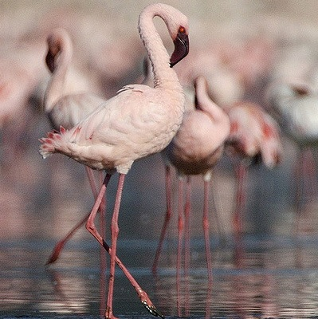

Toggle navigation
動物園の深度探索
首頁
(current)
緣起
動物分類法
林奈分類法介紹
哺乳綱
靈長目
松鼠猴
金剛猩猩
食肉目
雲豹
臺灣黑熊
鳥綱
燕雀目
臺灣藍鵲
巨嘴鴨
紅鶴目
小紅鸛
智利紅鶴
爬蟲綱
有鱗目
百步蛇
綠鬣蜥
龜鱉目
斑龜
歐洲陸龜
兩棲綱
無尾目
莫氏樹蛙
圓眼珍珠蛙
關於我們
小紅鸛
Phoenicopterus minor

界
動物界 Animalia
門
脊索動物門 Chordata
綱
鳥綱 Aves
目
火烈鳥目 Phoenicopteriformes
科
火烈鳥科 Phoenicopteridae
屬
火烈鳥屬 Phoenicopterus
種
小紅鸛 P. minor